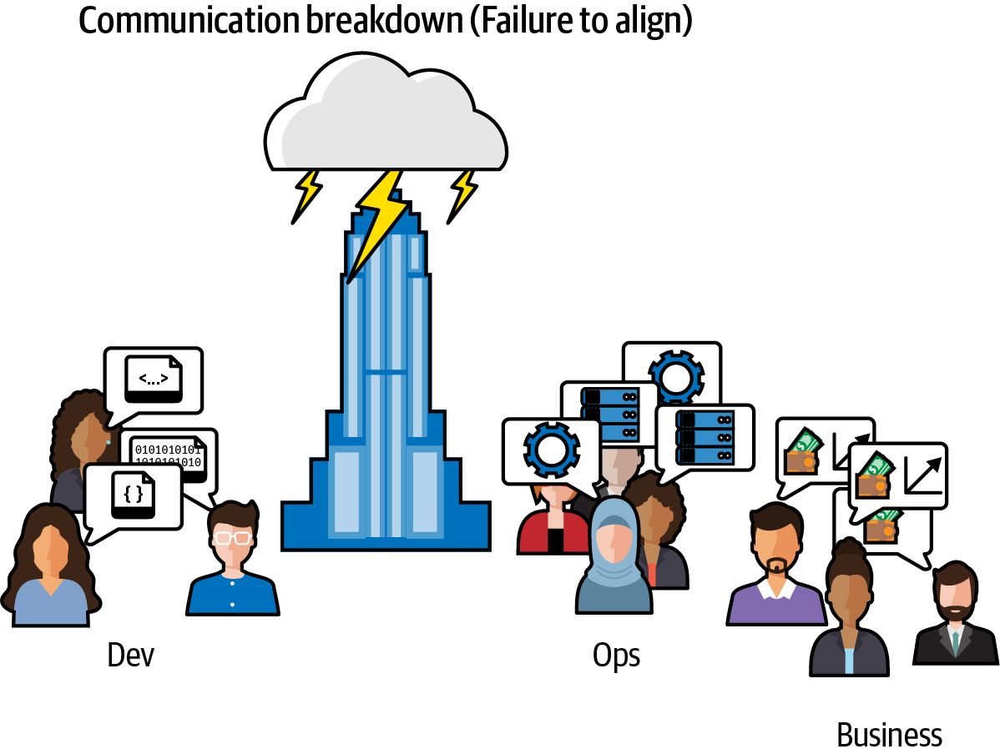
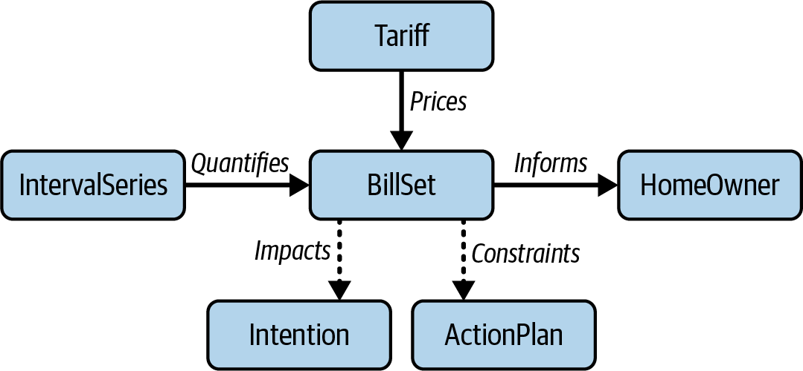
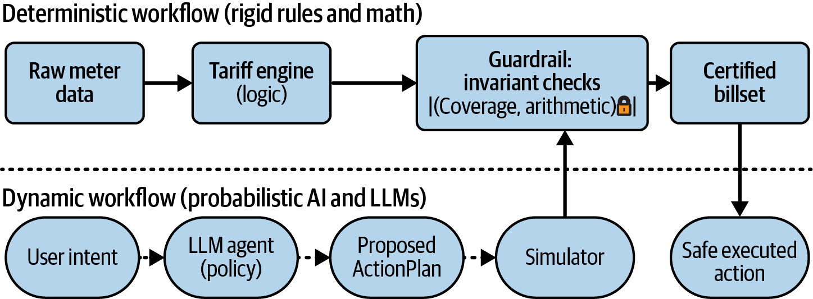

<title>第 17 章　本體論作為人類與人工智慧的共通語言 — 《可觀測性工程》第二版</title>
<link rel="stylesheet" href="style.css">

<nav class="chapnav">
    <a href="ch16.html">← 上一章</a>
    <a href="index.html">目錄</a>
    <a href="ch18.html">下一章 →</a>
  </nav>
<main>
  <header class="masthead">
    <span class="eyebrow">Observability Engineering · Second Edition</span>
    
    <h1 class="title serif">第 17 章<br>本體論作為人類與人工智慧的共通語言</h1>
    <div class="rule"></div>
  </header>

  <p>本章由 Frank Chen 撰寫，Frank Chen 現任 Balto Energy 技術長，</p>
<h2 class="section serif">並擔任加州大學聖地牙哥分校（UCSD）</h2>
<h2 class="section serif">設計實驗室的駐點設計師</h2>
<h3 class="subsection">來自 Charity、Liz、George 與 Austin 的說明</h3>
<p>邁向高度可觀測性的轉變，仰賴的是高情境遙測資料與資料驅動分析。團隊通常很快就會發現，「更高的可視性」也意味著要管理更多的資料。一旦你開始在各服務、環境與團隊之間擷取豐富的事件，就會遇到資料領域裡常見的問題：語意上的失誤。</p>
<p>同一個概念在多處被量測、以多種方式標記，或以略微不同的規則來定義。一開始，這只是不方便而已。但若放任不管，儀表板很快就會出現不一致、查詢結果對不上，也沒有人能確定哪一個版本的「真相」才是真正的真相。這是分析與資料工程領域裡眾所周知的失敗模式，而可觀測性領域也無法倖免。</p>
<p>本章介紹本體論，作為在開發、營運與商業利益相關者之間建立共同理解的實用機制。本體論是某個領域的結構化地圖：其核心實體、實體之間的關係，以及限制有效行為的規則。在可觀測性工作中，這張地圖透過語意慣例（semantic conventions）而變得可操作——也就是各服務一致發出的標準化名稱與結構，讓遙測資料同時編碼系統狀態與領域意義。</p>
<p>在本章中，Frank Chen 示範如何定義一個最小化的本體論，以及如何從開發階段到營運環境重複使用這些定義。此外，本章也延伸</p>
<p>這種方法用於處理非確定性 AI 系統，展示了提供護欄的 schema 與不變性條件（invariant），並透過將營運環境的遙測資料「回饋閉環」至驗證邏輯中，實現可重複的評估。</p>
<p>本章其餘內容以 Frank Chen 的第一人稱視角撰寫。</p>
<p>現在是週六凌晨 2 點。呼叫器響了。你打開筆電，盯著兩個互相矛盾的儀表板。基礎設施儀表板一片綠燈：「99.9% 正常運行時間」、「延遲 &lt; 200 ms」、「HTTP 200 OK」。根據平台指標，系統運作完美。</p>
<p>但業務儀表板卻在尖叫。用戶反映帳單違反物理定律——顯示的是被削減的太陽能輸出電量，而非應計入的電量抵免。你上週為優化電網互動而上線的 AI代理，開始幻覺出根本不存在的電價區間。</p>
<p>程式碼裡沒有任何東西「壞掉」。伺服器正常運行，API 也正常回應，AI 也正常回答提示。這個失敗對你標準的可觀測性工具而言是隱形的，因為它不是基礎設施的失敗，而是語意的失敗。</p>
<p>在複雜系統中——尤其是那些結合了嚴謹規則與非確定性 AI 的系統——資料無所不在，但真相卻很稀缺。「可用性」對開發人員來說可能意味著一件事（伺服器正常運行），對 SRE 來說是另一件事（延遲很低），而對業務端來說又完全是另一回事（帳單正確無誤）。接下來我要示範如何用本體論（ontology）修復這種無聲的失敗。</p>
<p>在探討如何為非確定性 AI 系統設計一個精簡實用的本體論之前，我們先來看看本體論在可觀測性中扮演的角色。</p>
<h2 class="section serif">本體論及其在可觀測性中的角色</h2>
<p>本體論是對某個領域中共享概念及其關係的正式、明確規範。它同時作為一種共通詞彙表與知識地圖，讓人類與機器能對資料及其意義建立共同的理解。為求清楚起見，我這裡談的並不是學術界所用的知識圖譜，而是指定義出你所屬領域的地圖——核心物件、關係與規則——並將其作為組織中的一層，特別是作為你可觀測性資料中的一層。這種本體論，正是組織用以引導其社會技術系統的方式。</p>
<p>本體論的目標，是避免定義的碎片化。像「可靠性」這樣的詞彙，會在你的團隊之間產生互相矛盾的訊號，進而滋生分裂與混亂，如圖 17‑1 所示。</p>
<figure class="plate">
<figcaption>圖 17‑1　當開發、維運與商業利益相關者缺乏統一的領域語言時，混亂便隨之而生。</figcaption></figure>
<p>本體論（ontology）與語意慣例（semantic conventions）是可觀測性中缺失的一層。就可觀測性工作而言，本體論能把分散的指標與日誌轉化為具名且相互連結的概念，並將其編碼為團隊的語意慣例、操作手冊與文件。如此一來，「正常運行時間」、「用戶」、「可用性」、「事件」等詞彙，在不同團隊與工具之間就能代表同一件事。這麼做在實務上帶來的效益包括：警報減少、診斷更快，以及從開發到營運環境訊號一致。</p>
<p>使用本體論與語意慣例時，你將能捕捉到傳統監控會遺漏的錯誤，同時也擁有一套強大的方法，可以為非確定性的 AI 設下防護欄。</p>
<p>本體論若未被編碼落實，終究只是紙上談兵。在下一節，我們將探討如何設計一套最小可行的本體論。</p>
<h2 class="section serif">設計本體論</h2>
<p>在可觀測性中，我們透過語意慣例（系統中每個服務都同意採用的標準化名稱、結構與綱要）來實作本體論。</p>
<p>可以把這些語意慣例想成組織內部的一層翻譯層。對商業利益相關者而言，它們提供了一套清楚的「成本」與「用量」詞彙，並能直接對應到客戶價值；對工程師而言，它們則讓抽象的技術指標有了根基，例如</p>
<p>延遲或吞吐量，轉化為實際的業務流程。而對系統本身而言，它們也扮演著嚴謹綱要（schema）的角色，將模糊不清的資料轉化為可驗證的真相。</p>
<p>透過本體論（ontology）建立語意慣例，可以在 Palantir Foundry、Apache Jena、Apache Atlas 或 OpenMetadata等框架中，探索額外實體、關係與約束的建模方式。</p>
<div class="callout"><p>要打造一套可靠的系統，我們得先從梳理「名詞」（實體）與「不變量」（規則）著手。以我們一直沿用的情境為例：一套能源管理系統，設計目的是協助用戶了解並優化其公用事業費用。這套系統的主要工作，是擷取原始用電資料，並依據複雜多變的公用事業費率，準確算出帳單金額。為了進一步創造價值，該系統還運用一個 AI 代理來產生帳單提案與優化方案——例如建議用戶何時該調整家電使用時段以省錢。</p></div>
<h2 class="section serif">定義核心實體（名詞）</h2>
<p>為了確保這套系統維持準確且安全，我們可以將其複雜的世界簡化為一組最基本的物件，並在對照圖中定義它們之間的關係：</p>
<pre class="code">IntervalSeries</pre>
<p>這是由帶時間戳記的一系列原始用電資料所組成。</p>
<p>Tariff（費率邏輯）</p>
<p>這是在特定期間內生效的確定性規則集（分時段使用時間窗、費率等）。</p>
<p>BillSet（輸出結果）</p>
<p>這是將 Tariff 套用到 IntervalSeries 後所產生的計算結果。</p>
<p>ActionPlan（AI 提案）</p>
<p>這是 AI 系統特有的暫定性物件，代表系統對用戶意圖的結構化解讀。它填補了模糊的自然語言（「幫我省錢」）與具體系統操作之間的落差。在通過驗證之前，ActionPlan 都屬於不可信任的物件。</p>
<p>一旦定義好這些物件，我們就能接著定義不變量。</p>
<h2 class="section serif">定義不變量（規則）</h2>
<p>不變量是必須始終成立的數學真理。若不變量遭到違反，即使沒有拋出任何例外，系統也已經算是故障了。核心規則如下：</p>
<dl class="deflist"><dt>覆蓋率（完整性）</dt><dd>IntervalSeries 中的每個時間戳記都必須恰好對應到 Tariff 中的一個計價區間。pricing_coverage 中不能有間隙，也不能有重疊。</dd><dt>算術（完整性）</dt><dd>BillSet 中的 total_cost 必須等於其各個組成部分的總和（浮點數容許誤差為 ±$0.01）。「整體」必須嚴格等於「部分」的總和。</dd><dt>確定性（可重現性）</dt><dd>給定相同的 series_id 與 tariff_id，系統每一次都必須產生相同的determinism_hash（BillSet）結果。重新執行昨天的資料，必須得出昨天的結果。</dd></dl>
<p>在傳統系統中，你或許會把這些規則當作簡單的單元測試來處理。但當你引入非確定性的 AI 時，不變量就成了你最主要的防線。你無法針對 LLM 可能產生的每一種幻覺撰寫單元測試，也無法預測 AI 是否會建議一個根本不存在的資費方案，或是一個違反物理法則的時間位移。</p>
<p>與其測試輸入（輸入是無窮無盡的），不如用不變量來約束輸出。透過將這些不變量當作執行期斷言，你便建立了一道語意防火牆。當 AI 產生 ActionPlan時，我們會模擬其結果，並根據不變量進行檢查。如果模擬結果出現覆蓋率間隙或算術錯誤，我們就能以數學上的確定性知道 AI 的計畫有瑕疵，並加以拒絕。這讓你能夠將具有創造力、非確定性的代理部署到營運環境中，同時仍維持確定性系統應有的安全保證。</p>
<h2 class="section serif">將領域的語意文法視覺化</h2>
<p>一旦你定義好名詞與不變量，就可以將它們的關係對應到圖形中，如圖 17‑2所示。</p>
<p>要理解這張圖，請依照資料從左到右的流動來看。系統從 IntervalSeries 開始，這是由硬體測量出的原始、實體的能源消耗真實值。這份資料在遇到 Tariff之前是靜態不動的，而 Tariff 代表該特定時段內有效的邏輯與計價規則。當你把實體資料（IntervalSeries）與邏輯（Tariff）結合起來時，就會產生BillSet——也就是財務上的真實值。</p>
<p>ActionPlan 位於確定性流程之外，是一個潛在的修改者。請注意，它並不會直接產生帳單，而是對其他實體提出變更建議——也許是位移 IntervalSeries 中的消耗量，或是切換到不同的 Tariff。它是一種「意圖」，等待著根據圖形其餘部分的物理規則來進行驗證。</p>
<figure class="plate">
<figcaption>圖 17‑2。本體論實體關聯圖：此圖將該領域的語意文法視覺化，定義了基本物件（名詞）與規則（不變量）。</figcaption></figure>
<h3 class="subsection">AI 工程師資源</h3>
<div class="callout"><p>若想更深入了解分散式能源資源（DERs）與領域建模，UCSD 設計實驗室的 Agile Electrification 小組維護了開放原始碼的操作手冊。這些資源包含將自然語言意圖解析為結構化ActionPlan 的特定模式，以及能源領域的標準本體論定義。你可以在該專案的 GitHub repo 中找到它們。</p></div>
<p>一旦你有了核心實體，就可以定義不變量。</p>
<h2 class="section serif">透過中繼資料黏合結構描述</h2>
<p>要實作這一點，你必須建立語意慣例，確保每個資料點都有明確的來源（provenance）。舉例來說，當你檢視一個 BillSet 時，你看到的不應只是一個金額；你應該能確切看到究竟是哪個輸入和哪個邏輯版本產生了它。來源資訊能讓你理解這個東西在資料庫中是如何、以什麼、以及為何存在。中繼資料就是讓你能看清是什麼建立了 BillSet 的黏合劑。</p>
<p>以下是我們決定性核心的簡化結構描述範例，重點在於我們如何將輸入與輸出連結起來：</p>
<pre class="code"><span class="tok-comment">// IntervalSeries (the Input)</span>
{
  <span class="tok-string">"series_id"</span>: <span class="tok-string">"uuid-home-1234"</span>,
...
  <span class="tok-string">"lineage"</span>: {<span class="tok-string">"source"</span>: <span class="tok-string">"smart_meter_api"</span>, <span class="tok-string">"fetched"</span>: <span class="tok-string">"yyyy-mm-dd"</span>}
}
<span class="tok-comment">// Tariff(the Logic)</span>
{
  <span class="tok-string">"tariff_id"</span>: <span class="tok-string">"uuid-tariff-55"</span>,
...
  <span class="tok-string">"rules"</span>: {<span class="tok-string">"type"</span>: <span class="tok-string">"time_of_use"</span>, <span class="tok-string">"windows"</span>: [{ ... }]}
  <span class="tok-string">"ruleset_version"</span>: <span class="tok-string">"2025.12.1"</span>
}
<span class="tok-comment">// BillSet (the Output)</span>
{
  <span class="tok-string">"billset_id"</span>: <span class="tok-string">"uuid-bill-100"</span>,
  <span class="tok-string">"total_cost"</span>: <span class="tok-number">150.76</span>,
...
  <span class="tok-string">"lineage"</span>: {
               <span class="tok-string">"input_series_id"</span>: <span class="tok-string">"uuid-home-1234"</span>,
               <span class="tok-string">"applied_tariff_id"</span>: <span class="tok-string">"uuid-tariff-55"</span>,
               <span class="tok-string">"calculation_engine_version"</span>:<span class="tok-string">"2025.5.1"</span>
             }
}</pre>
<p>在建立你的綱要時，請確保：</p>
<p>• 將每個輸出對應回其特定的輸入 series_id。</p>
<p>• 對你的邏輯進行版本控管（例如 ruleset_version），以確保結果可重現。</p>
<p>• 將血緣關係直接嵌入中繼資料，以自動化疑難排解。</p>
<p>透過在 Bill Set 中繼資料中明確連結 input_series_id 與 applied_tariff_id，你可以將單純的成本數字轉變為可追溯的稽核日誌。這種結構讓你的可觀測性工具能夠自動將成本的暴增與邏輯或輸入資料中的特定變更關聯起來。</p>
<p>藉由建立這些基礎綱要，我們讓系統準備好處理「解析後的意圖」——將模糊的 AI 建議轉換為下一節將探討的確定性驗證所需的結構化快照。</p>
<h2 class="section serif">使用 ActionPlan 將意圖綱要化</h2>
<p>如果你的系統使用 AI 來處理或產生動作，你還必須為意圖定義一個綱要。前面討論的物件捕捉的是實際發生的事情，而 AI 的加入則帶來了新的需求：捕捉可能發生的事情以及原因。我們不能信任 LLM 直接「修正帳單」。相反地，我們強制模型填寫一份 ActionPlan 綱要。</p>
<p>ActionPlan 綱要作為一種約束。它強制模型將「感覺」或對話中的細微差異轉換為確定性系統可以驗證的離散、可量測欄位。它是一種解析後的意圖：AI 認為用戶想要什麼的結構化快照，如以下綱要定義所示：</p>
<pre class="code"><span class="tok-comment">// ActionPlan (the Parsed Intent)</span>
{
  <span class="tok-string">"plan_id"</span>: <span class="tok-string">"uuid-plan-99"</span>,
  <span class="tok-string">"status"</span>: <span class="tok-string">"PROPOSED"</span>,
  <span class="tok-string">"predicted"</span>: {<span class="tok-string">"bill_delta_usd"</span>: -<span class="tok-number">94.50</span>},
  <span class="tok-string">"actions"</span>: [
    {<span class="tok-string">"device"</span>: <span class="tok-string">"ev_charging"</span>, “time_shift”: {<span class="tok-string">"start"</span>: <span class="tok-string">"22:00"</span>, <span class="tok-string">"end"</span>: <span class="tok-string">"06:00"</span>}},
  ],
...
  <span class="tok-string">"lineage"</span>: {...}
}</pre>
<p>請注意，透過來源脈絡，你可以推理輸入資料（IntervalSeries）是如何量化BillSet 的。而透過 ActionPlan，你則能在允許 AI 建議的變更執行之前，先推理它為什麼會提出這個變更。</p>
<p>定義好名詞、不變量，以及現在的 ActionPlan 之後，你已經建立了一套最基本的本體論。這個核心契約提供了必要的基礎，讓你能開始以自動化驗證、CI/CD 流水線與共用檢測來強化系統。</p>
<h2 class="section serif">驗證契約：持續整合</h2>
<p>對 AI 驅動的行動與意圖進行評估，應該要既枯燥又可重複執行。如果你正在建構一套依賴 AI 代理的系統，就不能仰賴「感覺」或手動測試，而是需要一套嚴謹的評估流水線，把你的本體論當作契約來對待。</p>
<p>這正是可觀測性「左移」的一個體現。在傳統工作流程中，我們常把漏洞視為部署之後才會發生的事。但有了強健的本體論，我們就能在系統觸及營運環境資料之前，先觀察其行為。透過使用不可變的固定測試資料（fixture，例如「黃金路徑」與「邊界案例」所用的標準輸入 IntervalSeries 與 Tariff），我們可以斷言在每一次程式碼變更之下，我們的不變量都依然成立。</p>
<h2 class="section serif">三層防禦閘門</h2>
<p>我們不再使用零散的測試清單，而是把 CI 閘門組織成三個各自獨立的防禦層：</p>
<dl class="deflist"><dt>確定性層</dt><dd>第一層檢查系統的嚴格物理規則。我們驗證確定性：給定相同的IntervalSeries 與 Tariff，系統必須產生完全相同的 BillSet 雜湊值。若雜湊值改變，就表示程式碼已經產生偏移。我們驗證運算完整性，確保total_cost 嚴格等於其各組成部分的加總。最後，我們驗證覆蓋率，確保100% 的輸入資料都對應到有效的邏輯區間，不留空隙也不重疊。這些都是二元的通過／失敗檢查，只要其中任何一項失敗，建置就視為破壞。</dd><dt>模擬層</dt><dd>一旦數學運算正確無誤，我們接著檢查邏輯。對於提出行動計畫的 AI 代理人，我們會執行模擬。我們取得代理人提出的變更，將其輸入確定性引擎，並驗證預測結果。代理人聲稱這個計畫能節省 $20 嗎？模擬必須在嚴格的容許誤差範圍內確認這個差額。如果 AI 幻想出物理引擎無法重現的節省成果，這道關卡就會關閉。</dd><dt>語意層</dt><dd>最後一層評估的是溝通品質。在這裡我們使用黃金對話（預先定義的理想互動）來為 AI 的解釋評分。舉例來說，我們會檢查是否設有信心下限，讓系統拒絕任何模型內部信心分數低於安全閾值（例如 0.6）的提案。</dd></dl>
<div class="callout"><p>評估流水線與檢測大型語言模型（LLM）超出本章範疇，但可參閱第 21 章對 AI 評估更詳盡的說明，尤其是關於建立黃金對話與評分的部分。黃金對話是針對特定模型預先定義的一組理想互動。</p></div>
<h2 class="section serif">建立團隊工作流程</h2>
<p>當某道關卡失敗時，本體論會告訴你該從哪裡著手檢查。如果結構性關卡失敗，工程師便修正 schema。如果覆蓋率關卡失敗，他們就檢視邏輯映射。如果語意關卡失敗，他們就調整提示詞或檢索情境。透過將這些失敗視為可觀測的事件——在 CI 中發出與營運環境相同的 JSON 結構——我們確保「修復建置」與「修復系統」是無法區分的。</p>
<h2 class="section serif">在營運環境中建立訊號對等性：持續部署</h2>
<p>具備語意慣例的本體論，其終極回報就是在通往營運環境的持續部署（CD）流水線中達成訊號對等性。在大多數組織中，CI 中測試系統的程式碼與營運環境中監控系統的查詢完全不同。這種脫節意味著「單元測試」捕捉到的錯誤，感覺起來與同一個錯誤在營運環境中觸發警報完全不一樣。</p>
<p>我們透過確保營運儀表板直接掛在本體論的物件上，來彌合這道落差。我們在營運環境中發出與 CI 流水線中產生的完全相同的結構化 payload。這意味著阻止拉取請求（pull request）合併的邏輯斷言，與營運環境中觸發事件的查詢是完全相同的查詢。</p>
<h2 class="section serif">了解訊號的層級架構</h2>
<p>我們的語意慣例並非採用籠統的「錯誤率」，而是能監控對應到業務衝擊的特定失敗類別。</p>
<p>首先，我們監控結構完整性。我們追蹤定價覆蓋率以確保沒有遺漏任何區間，並驗證資費生效日期以保證規則集與時間段相符。覆蓋率下降不僅僅是「資料錯誤」，而是對系統契約的違反。</p>
<p>其次，我們監控邏輯穩定性。我們藉由比對目前輸出與歷史基準或「孿生」模擬結果，來找出帳單異常。我們也追蹤排序漂移——如果系統針對相同的用量模式突然推薦不同的資費，就表示邏輯已經變得不穩定。</p>
<p>最後，我們監控人工智慧可靠性。由於我們的人工智慧工作流程會產出標準化的 ActionPlans，我們可以即時追蹤提案接受率與評估通過率。如果模型對照黃金對話的模糊比對分數下降，或用戶開始以更高比率拒絕提案，我們就能知道模型已經產生漂移，即使基礎設施仍然健康。</p>
<h2 class="section serif">建立共享檢測：通用酬載</h2>
<p>為了讓訊號對等性真正落實，我們定義了一組在每個工作流程中都會使用的共享檢測欄位，無論是確定性的批次作業還是動態的人工智慧互動皆然。系統所產出的每一行日誌，都必須攜帶重建該決策所需的上下文。</p>
<p>此酬載始於身分識別與版本控管。我們記錄 home_id 與 series_id 以將資料綁定到用戶，同時也嚴格識別 tariff_id 與 rule set_version。這讓我們能夠回答「帳單改變是因為用量改變，還是因為我們部署了新規則？」這個問題。</p>
<p>接著，我們納入不變量結果。該酬載明確陳述 pricing_cov erage 分數與determinism_hash。如果計算失敗，日誌不會只顯示 error，而是會準確指出究竟違反了哪一項不變量。</p>
<p>對於由人工智慧驅動的工作流程，我們可能會在可觀測性工作流程中為模型與提示詞豐富額外的上下文。我們希望擷取 model_name（例如 GPT‑5）與prompt_version。透過將這些欄位標準化，營運環境中的「低接受率」儀表板便能立即深入分析，判斷問題是否僅限於特定的提示詞版本或模型變體。</p>
<p>透過將這些共享檢測欄位系統化，我們超越了理論性的對應，進入了主動的系統防禦。這個通用酬載確保每個元件——無論是確定性程式碼還是生成式模型——都說著相同的</p>
<p>語言。有了這個語意基礎之後，我們現在可以來檢視「AI 三明治架構」，其中這些定義扮演著剛性規則與流動性 AI 意圖之間的關鍵介面。</p>
<h2 class="section serif">實作 AI 三明治架構</h2>
<p>為了將我們所定義的最小本體論（包含 BillSet 這類名詞，以及算術完整性這類不變量）落實運作，我們採用 AI 三明治架構。這種架構模式將一層非確定性的 AI 層，夾在兩層確定性、基於規則的邏輯之間。這確保了動態的、由 AI驅動的流程能持續立足於確定性工作流程所提供的真相基石之上。</p>
<p>為了確保可靠性，我們必須嚴格區隔系統的「物理法則」與「想像力」。透過將「物理法則」（我們不可變的業務規則）與「想像力」（LLM 的機率性本質）解耦，我們可以防止非確定性的 AI 幻覺破壞核心財務資料的完整性。圖17‑3 說明了這兩個世界的解耦方式。</p>
<figure class="plate">
<figcaption>圖 17‑3。這個雙工作流程架構顯示了防護機制如何建立可靠性。AI 工作流程（下方）所提出的動作，必須先通過確定性、基於規則的工作流程（上方）進行不變量檢查驗證，才能執行任何動作。</figcaption></figure>
<p>我們將應用程式劃分為兩個各自獨立的迴圈，各自負責特定職責與可觀測性需求：</p>
<dl class="deflist"><dt>確定性工作流程</dt><dd>確定性工作流程是系統中無趣但安全的部分。它接收一個輸入（IntervalSeries），套用一組剛性規則（Tariff），產生一個輸出（BillSet）。它在數學上是純粹的；如果你執行 10 次，會得到完全相同的雜湊值10 次。我們將這個工作流程用於所有需要具備法律</dd></dl>
<p>精確性：計費帳單、比較歷史成本，或產生模擬的「真實情況」。在這裡，可觀測性著重於不變量的落實。我們監控覆蓋率、算術完整性以及雜湊穩定性。如果這一層出現問題，就代表程式碼壞了。</p>
<dl class="deflist"><dt>動態 AI 工作流程</dt><dd>動態 AI 工作流程是系統中富有創造力的部分。AI 會分析用戶的情境並綜合出一份 ActionPlan。我們將這個物件視為「意圖擷取」——也就是 AI 認為用戶想要什麼的快照，凍結成我們可以模擬的格式。由於大型語言模型（LLM）本質上是非決定性的，這個工作流程容易產生幻覺。AI 可能會建議在不存在的時間窗口內為電動車（EV）充電，或者可能針對用戶並未採用的電價方案進行優化。</dd></dl>
<p>如果我們把規則視為護欄，我們就絕不會直接執行 AI 提出的方案。相反地，我們會把 ActionPlan 餵入決定性工作流程來驗證它。我們把 AI 的輸出視為假設，而以規則為基礎的引擎則是測試。我們可以問：</p>
<p>• 提出的方案是否能產生有效的 BillSet？•</p>
<p>• 模擬結果是否確認了預測的省錢效果？•</p>
<p>• 該方案是否違反任何硬性限制（例如 100% 覆蓋率）？•</p>
<p>如果決定性層回答「否」，那麼在用戶看到之前，AI 提出的方案就會被拒絕。在我們的可觀測性資料中，我們將此記錄為「方案拒絕」。這項指標——護欄拒絕提案方案的比率——成為我們用來衡量 AI 可靠性最高保真度的訊號。</p>
<p>以規則為基礎的引擎並不會執行未經檢查的方案，而是作為一個持續的驗證層，在任何違反核心不變量的輸出到達用戶之前就予以拒絕，並回傳訊號以重新啟動迴圈。在我們的可觀測性資料中，這項方案拒絕率成為我們在營運環境中監控 AI 可靠性最高保真度的訊號。</p>
<h2 class="section serif">閉合迴圈：營運環境的駕駛測試</h2>
<p>在 AI 三明治架構中，營運環境不僅是程式碼運行的地方；它也是測試案例誕生的地方。我們透過把營運環境中擷取到的遙測資料與邊緣案例，直接回饋到我們的開發與測試循環中，來「閉合迴圈」。當 AI 建立了一個被規則引擎拒絕的方案時，那就是一次學習機會。我們不只是記錄錯誤；我們會擷取讓模型感到困惑的特定輸入（提示詞、IntervalSeries 以及 Tariff）。我們會清除這些資料中的個人識別資訊，並將其提升為 CI 環境中的黃金對話（golden dialog）。這創造出一個持續的回饋迴圈，讓真實世界中的失敗自動成為下一代自動化測試的素材。</p>
<p>透過將營運環境中的追蹤資料視為未來的測試素材，我們建立了一種資料飛輪。如果模型無法理解某個特定的邊緣情況——例如閏年的資費變動——我們會擷取這個案例，將其加入評測套件（eval suite），並封鎖後續部署，直到模型通過該特定情境的測試為止。我們將「評測通過率」（eval pass rate）視為一項服務水準指標（SLI）來追蹤。這個比率突然下降，會被視為與延遲飆升完全相同的等級：一起需要立即修復的可靠性事故。</p>
<h2 class="section serif">將本體論付諸實踐</h2>
<p>為了視覺化這種架構在實際運作環境中如何運作，讓我們以範例本體論走過兩個具體情境。</p>
<h3 class="subsection">情境 A：確定性比較</h3>
<p>考慮一位想知道自己是否應該更換資費方案的用戶。系統首先會綁定用戶的歷史 IntervalSeries，並取得三個候選的 Tariffs。接著它會呼叫確定性引擎來產生三組不同的 BillSets。在回傳任何資料之前，系統會執行不變量檢查（invariant check），確認歷史紀錄中的每一個區間都能成功對應到特定的價格區間。驗證通過後，系統會依照 total_cost 對 BillSets 進行排序。</p>
<p>從可觀測性的角度來看，日誌會發出一個包含 determinism_hash 與ruleset_version 的負載（payload）。這建立了一條完美的稽核軌跡；如果用戶日後打電話給客服詢問為什麼數字改變了，工程師就能取回並重播該次特定計算所使用的確切資費版本。</p>
<h3 class="subsection">情境 B：AI 提案</h3>
<p>現在，考慮一位用戶要求 AI 代理人「幫我省錢」。模型產生一份 ActionPlan，建議將電動車充電時間改到晚上 10 點。系統不會立即執行這項提案，而是進入模擬階段。它會建立一個合成的 IntervalSeries（依提議動作修改過的反事實資料副本），並讓這份反事實資料通過確定性工作流程，以計算出新的費用。</p>
<p>接著系統會執行一個驗證步驟，比對確定性引擎所計算出的節省金額與 AI 預測的節省金額。如果 AI 預測可省下 $20，但引擎計算出的結果只有 $0.50，系統就會將該提案標記為幻覺（hallucination）並將其捨棄。可觀測性層會以特定的結構化值記錄這個事件，例如：proposal_status=rejected 和rejection_reason=simulation_mismatch。這確保了不好的建議會被系統攔截，而不是讓客戶承受後果。</p>
<h2 class="section serif">結論</h2>
<p>本章一開始，我們是在凌晨兩點被急促的呼叫器聲叫醒，儀表板卻在說謊。根本原因是語言不一致。儀表板互相矛盾、警報重複，值班工程師則因團隊之間沒有共用相同的名詞與動詞而身心俱疲。本體論與語意慣例不只是文件，它們有助於形塑你的可觀測性策略。這些物件與不變量能協助把未知的未知轉化為清晰、可採取行動的訊號。</p>
<p>對於在工作流程中使用非確定性 AI 的軟體團隊來說，這種維度化思維十分重要。你應該把輸入與輸出都視為不受信任的資料來建模，理解其各自的組成部分，盡可能以基於規則的不變量來驗證工作流程，並持續一致地使用這些不變量。</p>
<p>具備語意慣例的本體論並不會讓故障或可觀測性挑戰消失，但它能把凌晨兩點那聲令人困惑的呼叫器警報，從一場在零散資料中盲目搜尋的過程，轉變為一次有方向的搜尋。遵循本章的建議，能確保你下次被叫醒時，擁有共用的詞彙來準確找出究竟是哪個不變量被違反，並在警報打到你的手機之前就把問題解決。</p>
<p>第 IV 篇深入探討了實作細節。在第 V 篇中，我們把視野拉遠。</p>
<p>在這裡，我們會探討可觀測性在不同領域中的應用：當情境改變時，你所學到的技術會如何套用。這一篇是為想要把這些實務做法帶入自身特定工作領域的工程師所寫。</p>
<p>「可觀測性」最初是從控制理論借用並套用到軟體上時，主要著重於後端可靠性。但如今情況已不再如此單純。這個概念如今延伸至資料品質、安全監控、合規性、容量規劃等等——遠遠超過一本書所能涵蓋的範圍。因此，我們把重點放在那些我們親眼見證這些實務做法確實有效的應用案例上。</p>
<p>第 18 章探討如何將可觀測性技術應用於 CI/CD 流水線——如何除錯並改善軟體交付績效。Namespace Labs 執行長 Hugo Santos 對本章貢獻良多。</p>
<p>第 19 章是由 Hanson Ho 客座撰寫的章節，並附有 Matt Klein 撰寫的一段補充內容，主題是前端行動裝置可觀測性。行動裝置正是基數爆炸的典型例子：數不清的裝置類型、作業系統（OS）版本、網路狀況、工作階段長度，以及用戶行為。本章探討要真正了解外部實際發生的狀況，需要做到哪些事。</p>
<p>第 20 章談的是性能工程——可觀測性實務做法如何協助你蒐集基準值、進行實驗，並量化架構變更所帶來的影響。如果你需要讓系統變得更快，這正是嚴謹達成此目標的方法。</p>
<p>第 21 章探討的是終極難題等級的非確定性謎題：如何在營運環境中確保基於LLM 的應用程式之可靠性。本章檢視了運用可觀測性實務來確保 LLM 可靠性的技巧，也展示了如何運用生產資料來更精進 LLM。</p>
<p>第 22 章是由 Fin 公司資深產品工程師 Kesha Mykhailov 所貢獻的客座章節。內容記錄了打造與營運 Fin 的 AI 代理人的歷程——這個故事串連了本書前面章節的許多技巧，並展示了這些技巧在真實世界中結合運用時能發揮的效果。</p>
<p>在第六篇中，我們的視角將完全轉變，從實務工作者轉向領導者，探討如何建立組織的一致性，讓團隊真正能以 AI 的速度前進。</p>

  <footer class="colophon">
    <span>《可觀測性工程》第二版 · 第 17 章</span>
    <span>本體論作為人類與人工智慧的共通語言</span>
  </footer>
</main>
